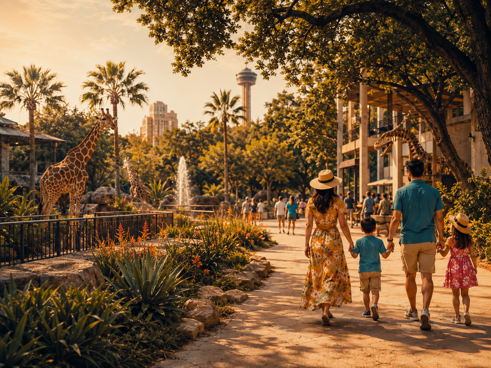
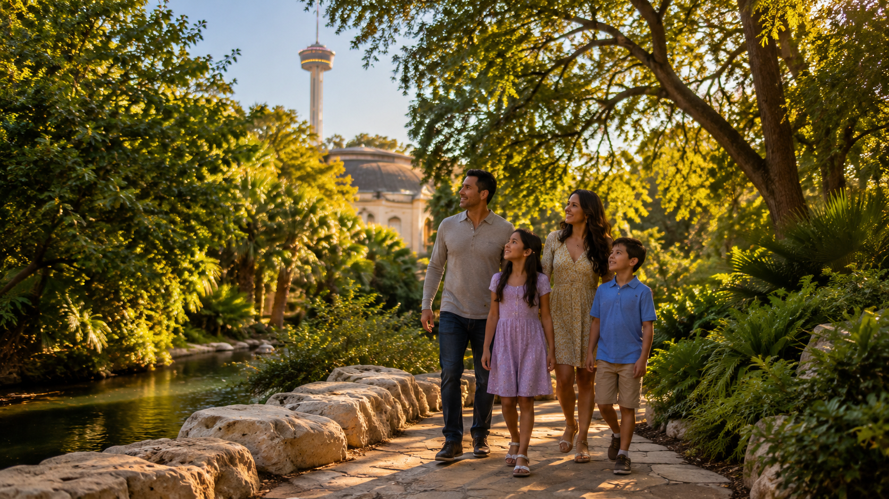

Full-energy day
Theme park, tickets, water breaks, dinner near the hotel.
Big-kid stamina
Ticket days
Resort bases
Theme park plan
Built by The AI Plug
SUMMER FAMILY GUIDE
Theme parks, downtown with kids, zoo and museum mornings, Hill Country adventures, resort pool days, and before-flight plans — built around heat, nap timing, and how much energy your crew has left.
Jump to what you need
What should we do in San Antonio with kids?
Most families do not need a giant list first. They need the right move for the heat, kid ages, hotel zone, meal timing, and how much energy the group has left.

When the crew wants coasters, shows, and a full-day memory — pick one park, pace for heat, and plan a clean exit.
Open route guide →
A short loop with one kid-friendly first stop, a food reset, and one photo moment — without a downtown death march.
Open route guide →
Zoo, Brackenridge Park, Japanese Tea Garden, Witte, DoSeum — one compact part of town, not a five-stop sprint.
Open route guide →
Tour the caverns, then roll straight into Natural Bridge Wildlife Ranch (drive-through safari) next door — two big kid wins, one Hill Country route.
Open route guide →
Protect pool time, add one strong off-property win, and get everyone home before the meltdown window.
Open route guide →
Breakfast, one nearby stop, and real airport-timing padding — built for bags, car seats, and tired kids.
Open route guide →Quick match
Choose the plan that matches your crew, heat tolerance, hotel zone, and time window.
Theme park, tickets, water breaks, dinner near the hotel.
Hemisfair, Yanaguana Garden, River Walk loop, Tower, Market Square.
Zoo, Japanese Tea Garden, Brackenridge Park, Witte, DoSeum — pick your pocket, not the whole map.
Natural Bridge Caverns plus Natural Bridge Wildlife Ranch / safari park.
Protect pool time, add one off-property win, avoid overplanning.
Route Theme park day
SeaWorld or Fiesta Texas as a full-energy day: one park, tickets and parking locked in, and a reset that doesn’t steal the win.
Pick one park, not two heavy days back to back — SeaWorld / Aquatica near Hyatt, Six Flags Fiesta Texas near La Cantera. Build around tickets and parking, front-load rides when lines are shorter, hydrate like it’s a sport, and name a dinner zone before anyone is starving.
After a long park day, easy food near the hotel or resort usually beats dragging the crew downtown. Use Where To Eat when you need a zone-matched backup.
Pick one park, and don’t pair it with a heavy downtown night unless the group still has real gas left.
Pick the situation closest to yours, or type your hotel, group, timing, and what kind of night you want.
Ask A LocalRoute Downtown with kids
One first stop, one food reset, one photo beat — short River Walk energy without a downtown death march.
Start with one kid-friendly first stop, then add one food stop and one photo stop. Do not try to “do all of downtown” in one push.
Plan food before everyone is hungry. Market Square, Mi Tierra energy, or the Where To Eat guide can become the reset point.
Morning or early evening is better than mid-afternoon heat, especially with little kids.
Pick the situation closest to yours, or type your hotel, group, timing, and what kind of night you want.
Ask A LocalRoute Zoo + museum area
One compact area: pick one first stop and one nearby bonus instead of sprinting the whole map.
Winning rhythm: zoo + Tea Garden • Witte + park time • DoSeum + a short outdoor cooldown — not all five.
Pick one main first stop, then add one nearby bonus. Zoo plus Japanese Tea Garden works. Witte plus park time works. Trying to do everything usually backfires.
Plan lunch or a hotel reset before the late-afternoon slump. Little legs hit a wall faster in heat.
This plan is strongest as a morning or early-afternoon move.
Pick the situation closest to yours, or type your hotel, group, timing, and what kind of night you want.
Ask A LocalRoute Hill Country day
Caverns plus safari next door — one Hill Country drive, two different kid highs, not two random pins.
Treat this like a planned Hill Country day combining Natural Bridge Caverns with the safari park next door. Pick the order, check timing for both stops, bring water, and don’t pair it with a heavy downtown night.
Eat before or after the route instead of gambling on hungry kids between Natural Bridge Caverns and Natural Bridge Wildlife Ranch / safari park.
Earlier is better in warm months. Build in drive time both ways.
Pick the situation closest to yours, or type your hotel, group, timing, and what kind of night you want.
Ask A LocalFamily move Resort family rhythm
Pool-first rhythm: protect the resort, add one off-property win, and land home before the meltdown window.
Use the resort as your starting point. JW: River Bluff lazy river and kids’ club. Hyatt: 5-acre water park and Big Spring Lagoon. La Cantera: Topgolf or Andretti when you need off-property energy. Add one food move, not a packed citywide itinerary. See Resort Guides for area guides.
Plan dinner near the resort or on the way back instead of forcing a late downtown drive. For campus dining shortcuts, jump to Resort Guides.
Morning activity, afternoon pool, easier evening food usually beats a full-day sprint.
Pick the situation closest to yours, or type your hotel, group, timing, and what kind of night you want.
Ask A LocalHeat escape Indoor backup
When the sun wins, pick one indoor anchor instead of pushing another outdoor stop.
Pair one indoor stop with lunch and pool time. Full downtown indoor list on Downtown.
Pick the situation closest to yours, or type your hotel, group, timing, and what kind of night you want.
Ask A LocalPlan Before-flight playbook
Breakfast, one close stop, and a real airport cushion — checkout day without the chaos.
Protect your airport cushion first. Fit one reachable stop near your hotel — not a heroic cross-town tour — then close the trip calm instead of sweaty.
Pick breakfast and a lunch or snack stop with parking sanity. Last-day hanger at TSA is avoidable.
Don’t gamble the last day on a far route; keep it close, shaded or indoor, and easy to abort if timing tightens.
Pick the situation closest to yours, or type your hotel, group, timing, and what kind of night you want.
Ask A LocalConcierge help
Pick a plan above, then tell us your hotel, kids’ ages, and flight times if you have them. We’ll build a day with shade, food, and rest built in — not squeezed in at the last minute.
Heat-smart day rhythm
Park the hardest outdoor stops here while energy (and tolerance) are highest.
This block protects parents as much as kids — log it like a reservation.
A snack, splash pad, shaded loop, or one short scenic stop beats a surprise second marathon.
Cooler walks and River Walk vibes land better once everyone isn’t sun-drained.
San Antonio summer is easier when lunch, AC, and pool time are part of the plan — not an afterthought.
Recommended combos
Simple combinations that work better than trying to do everything in one day. Swap meals with Where To Eat when you need a zone match.
Hemisfair → River Walk short loop → Market Square → easy dinner
SeaWorld or Fiesta Texas → hotel/pool reset → nearby dinner
Zoo → Japanese Tea Garden → Witte or DoSeum → lunch reset
Natural Bridge Caverns → Natural Bridge Wildlife Ranch / safari park → early dinner
Pool morning → one planned outing → resort dinner or nearby food
Breakfast → one nearby stop → protect airport timing
Your move
Share hotel zone, kids’ ages, time windows, and how hard you want to push. We send back a tight plan with food and resets baked in.